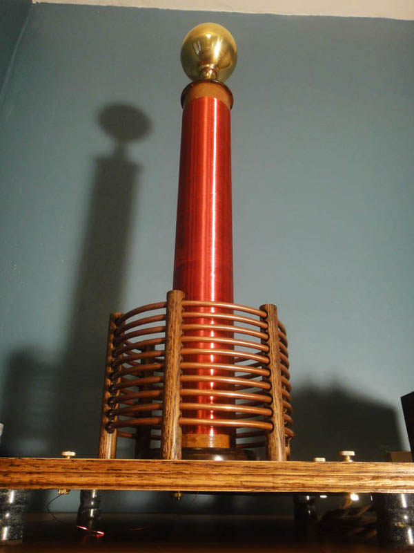
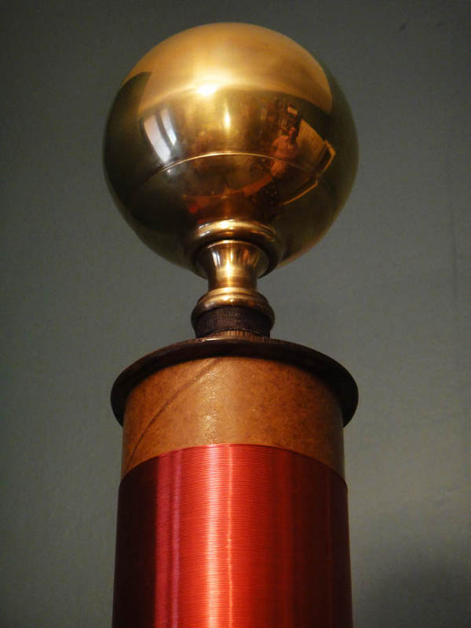
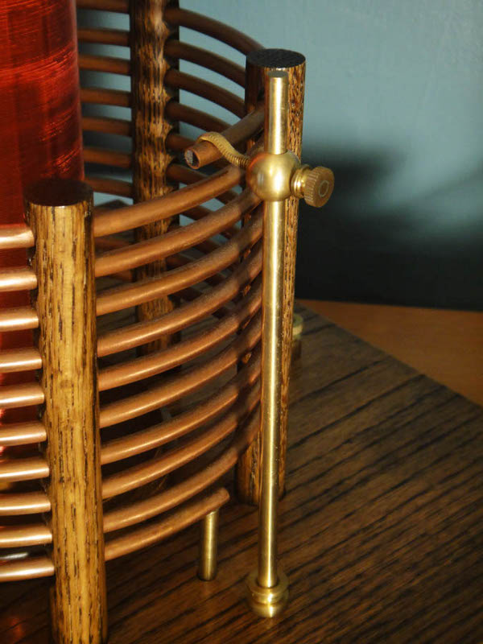
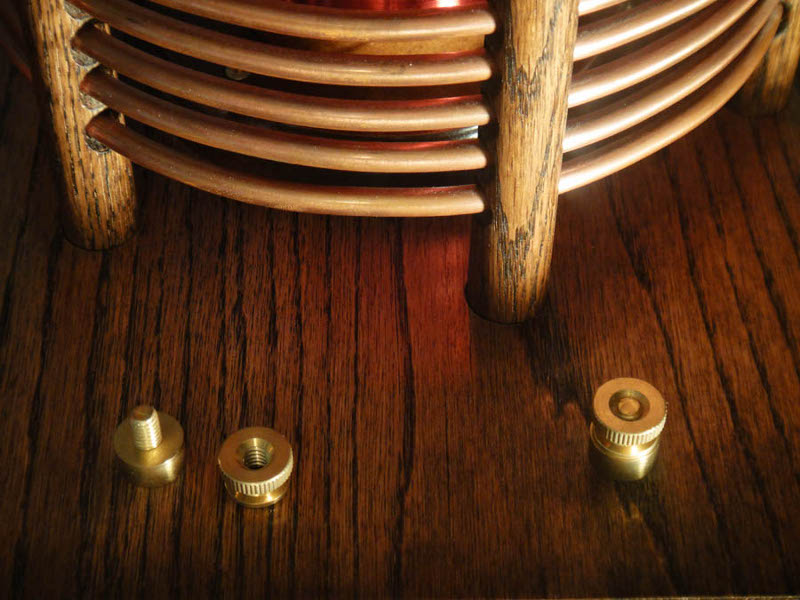

Tesla Coil Tesla Coil
Tesla Coil Tesla CoilThe ultimate expression of esoteric technomancy has to be the Tesla-designed high-frequency oscillating transformer - also known as the Tesla Coil. Last year I resolved to build a tesla coil from scratch, referencing A. P. Morgan's The Boy Electrician and using only materials that would have been available at the time said book was published (1913). The resulting device is fully functional, and, in my opinion, quite attractive.
My self-imposed restriction to early 20th century materials proved a larger hindrance than I had supposed, however, with the exception of the red enamel insulation on the secondary winding and some polyurethane varnish, I succeeded in avoiding anachronisms. Because I built the Tesla coil as a stand-alone component rather than integrate the power source, capacitor, and spark gap into a whole, I do not consider my use of a modern 10kv transformer a violation of my rule.
The top-load of the coil, which, as I understand it, functions as one plate of a very widely-spaced capacitor (the other being the earth), is made from a brass ball which once adorned a bed. I have been using that disassembled brass bed for raw materials for years, and the brass sphere was in fact the impetus for the entire project. Once I had envisioned its suitability as an attractive top-load, I searched my shop for the remaining materials necessary for the project and found that I already had much of what I needed: a cardboard tube of the appropriate diameter; copper tubing for the primary coil; wood; soapstone (from which I fashioned legs);and brass hardware. I bought some 26 gauge wire for the secondary and began construction.
The above photo shows the top-load sitting on an oak dowel, mounted to the carboard tube which ends a few inches beyond the secondary winding. The secondary wire is threaded through a hole in the wall of the tube, then passes out the top where it is soldered to the brass ball; this is a design flaw. During operation of the coil, a great deal of corona discharge surrounds the top of the secondary winding. I believe this represents a major leakage of power which should be loading the top electrode. When building a Tesla coil, one has to remember that the output will be of an extremely high voltage and frequency, both conditions turning materials normally considered insulators (wood, air, etc.) into conductors. Therefore, if I am correct, some of the available power is finding a path through the air, rather than passing on to the top-load where it would build until discharge. In addition to the corona loss, the excess wire I originally left inside the tube was causing arcing through the tube. Thus, were I to alter this Tesla coil, or build another, the first change I would make would be to cut off the excess cardboard tube beyond the end of the secondary, bringing the top-load closer. Further, I would not pass the secondary wire through the tube, but rather solder it to the brass ball from the exterior.
A Tesla coil functions as an oscillating transformer, meaning that the frequency of the primary circuit has a great deal to do with the output of the secondary. The common adjustments made to tune the primary to the fixed resonant frequency of the secondary are in the spark gap, the capacitor, and the number of turns in the primary winding. The capacitor I used is of the fixed, plate type. It consists of several plates of glass paired with alternating sheets of aluminum. There is no adjustment to be made there beyond adding more such capacitors. My spark gap is of the static variety which, among its other shortcomings, allows for very little adjustment. The only useful point of adjustment in the primary circuit as I originally designed it, is in the number of turns forming the primary winding. The photo shows my solution for contacting different turns in the primary, which is made of ten turns of 1/4" copper tubing. The adjustable contact works very well, however, in operating the coil, I found the best performance delivered when all ten turns were used. That may change with adjustments to the capacitor and spark gap.
I used brass hardware throughout the device. The binding posts are rather more crude than those found on some of my latter devices, however they work just as well, and perhaps allow for a little more flexibility in what kind of wire is used to make connections. I used oak to support the primary and for the table, which is joined seamlessly.
I originally intended to duplicate the device described in A. P. Morgan's book, using the same materials available at the time it was published. While I ultimately decided to build the more iconic vertical Tesla coil rather than Morgan's horizontal, bipolar version, I nevertheless retained the materials restriction; I wanted to to build a device that was as beautiful as it was functional, and which had some value as a teaching tool and an historic model. Overall, I think I achieved the effect which I sought, and I will be proud to display my Tesla coil for many years to come.
Created by Sean Corron, April 2, 2011.